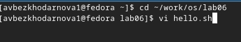
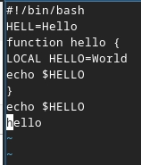
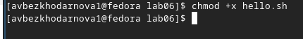
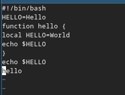
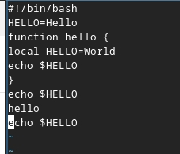

Лабораторная работа №10
Архитектура компьютеров
Безходарнова А.В.
Российский университет дружбы народов, Москва, Россия
11 апреля 2026
Информация
Докладчик
- Безходарнова Алиса Викторовна
- Студентка НКАбд-01-25
- Алiса
- Российский университет дружбы народов
- 1032253545@rudn.ru

Цель работы
Познакомиться с операционной системой Linux. Получить практические навыки работы с редактором vi, установленным по умолчанию практически во всех дистрибутивах.
Задание
- Ознакомиться с теоретическим материалом.
- Ознакомиться с редактором vi.
- Выполнить упражнения, используя команды vi.
Теоретическое введение
В большинстве дистрибутивов Linux в качестве текстового редактора по умолчанию устанавливается интерактивный экранный редактор vi (Visual display editor). Редактор vi имеет три режима работы: – командный режим — предназначен для ввода команд редактирования и навигации по редактируемому файлу; – режим вставки — предназначен для ввода содержания редактируемого файла; – режим последней (или командной) строки — используется для записи изменений в файл и выхода из редактора. Для вызова редактора vi необходимо указать команду vi и имя редактируемого файла: vi <имя_файла> При этом в случае отсутствия файла с указанным именем будет создан такой файл. Переход в командный режим осуществляется нажатием клавиши Esc . Для выхода из редактора vi необходимо перейти в режим последней строки: находясь в командном режиме, нажать Shift-; (по сути символ : — двоеточие), затем: – набрать символы wq, если перед выходом из редактора требуется записать изменения в файл; – набрать символ q (или q!), если требуется выйти из редактора без сохранения.
Выполнение лабораторной работы
Cоздаю новый каталог, перехожу в него и вызываю файл. (рис. @fig:001).

Ввожу текст в файл (рис. @fig:002).

Делаю файл исполянемым (Рис @fig:003).

Меняю текст по указаниям (Рис @fig:004)

Удаляю добавленную строку (Рис @fig:005)

С помощью клавиш возвращаю строчку и сохраняю файл

Вывод
В ходе данной лабораторной работы я освоила возможности работы с редактором vi и пПриобрела навыки практической работы.
Контрольные вопросы
Дайте краткую характеристику режимам работы редактора vi. Командный (ввод команд), ввода (набор текста), последней строки (команды с :), визуальный (выделение).
Как выйти из редактора, не сохраняя произведённые изменения? В командном режиме :q!.
Назовите и дайте краткую характеристику командам позиционирования. h/j/k/l — движение, w/b — по словам, 0/$ — начало/конец строки, gg/G — начало/конец файла.
Что для редактора vi является словом? Последовательность букв, цифр и знака подчёркивания, ограниченная пробелами или знаками препинания.
Каким образом из любого места редактируемого файла перейти в начало (конец) файла? gg — в начало, G — в конец.
Назовите и дайте краткую характеристику основным группам команд редактирования. Удаление (dd, x), вставка (i, a), замена (r, s), копирование/вставка (yy, p), отмена (u), повтор (.).
Необходимо заполнить строку символами $. Каковы ваши действия? cc (очистить строку и войти в режим ввода), затем набрать нужное количество $.
Как отменить некорректное действие, связанное с процессом редактирования? u — отмена, Ctrl+r — возврат отменённого.
Назовите и дайте характеристику основным группам команд режима последней строки. Сохранение (:w), выход (:q), поиск (/), замена (:s/old/new/), установка параметров (:set).
Как определить, не перемещая курсора, позицию, в которой заканчивается строка? Команда $ перемещает курсор. Без перемещения — визуально по номеру строки или :set number.
Выполните анализ опций редактора vi (сколько их, как узнать их назначение и т.д.). Десятки. Узнать — :set all, назначение конкретной — :help option.
Как определить режим работы редактора vi? По реакции клавиш: ввод текста — режим ввода, команды — командный, строка с : — режим последней строки.
- Постройте граф взаимосвязи режимов работы редактора vi. Командный → режим ввода через i/a/o, обратно через Esc. Командный → режим последней строки через :, обратно через Enter. Командный → визуальный через v/V, обратно через Esc.